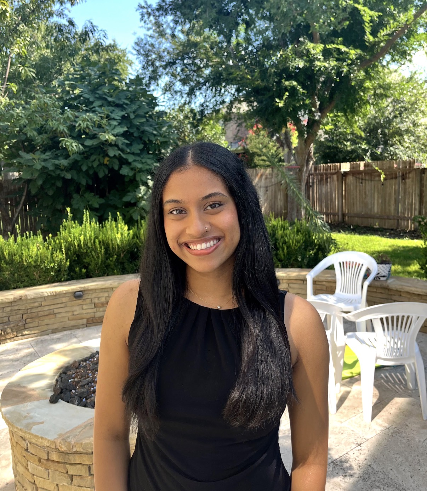

Physics-informed ML for chip manufacturing
Simulation pipelines with physics-informed kernels for semiconductor lithography, running at production scale for clients like Intel and Samsung.
Artificial Intelligence/Machine Learning · Data Science · Applied Research
About
I currently build physics-informed ML simulation pipelines for semiconductor lithography, used at production scale by clients like Intel and Samsung.
Columbia University — MS Data Science, 2027
UT Austin — BS Statistics & Data Sciences, 2026

Simulation pipelines with physics-informed kernels for semiconductor lithography, running at production scale for clients like Intel and Samsung.
Multi-agent and RAG systems that automate real workflows — from documentation to live data analysis.
Speech-to-text and NLP pipelines feeding real-time graphing, medical scribing, and mind-mapping systems.
Simulation. Physics-informed ML pipelines for chip lithography — cut critical-dimension margins by 30%.
Accuracy. Improved aerial-image correction by 38% for advanced chip manufacturing nodes.
Scale. 50× throughput gain in aerial-image generation — jobs down from 2 hours to under 3 minutes — for clients including Intel and Samsung.
Feature — Hack Texas 2025
Live conversation, transcribed and mapped into a real-time, searchable mind map — with Google Scholar lookup on every node. Built end-to-end in 24 hours.
Python · React · Deepgram STT · AWS DynamoDB / Lambda · Scholar API
View project ↗AI/ML Research Analyst
NLP algorithms and MVP work for a medical AI scribe, with speech-to-text pipelines cutting manual preprocessing effort 40% and enabling faster iteration cycles.
Python · AWS HealthScribe · Deepgram · Nabla